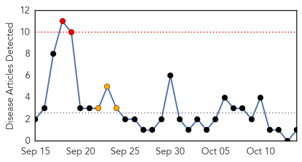
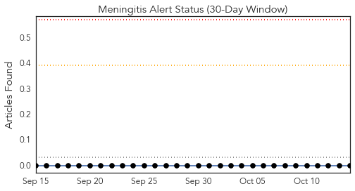

Ebola
30-Day Web Trend
11 alerts, 1 warnings

30-Day Twitter Trend
7 alerts, 4 warnings

Article Locations

Article Confidences

Top Articles:
- 1.000
- WFMJ.com News weather sports for Youngstown-Warren Ohio
- 1.000
- Concern over Ebola low here, still health care providers prep for the infection.
- 1.000
- The reassuring news in the Texas Ebola cases
- 1.000
- Dallas hospital learned its Ebola protocols while struggling to save mortally ill patient
- 1.000
- U.S. Isn't Done With Ebola
- 1.000
- Up to 10,000 new cases of Ebola per week expected in two months
- 1.000
- Ebola mortality rate now 70 per cent: WHO
- 1.000
- Doctor who beat virus gives transfusion for Ebola-infected Dallas nurse
- 1.000
- The Importation of Ebola
- 1.000
- WHO says 10,000 new Ebola cases likely by December
- 1.000
- WHO: 10,000 new Ebola cases per week could be seen
- 1.000
- UN Health Worker Dies of Ebola
- 1.000
- Doctor Who Beat Ebola Gives Blood for Infected Nurse
- 1.000
- Ebola Update
- 1.000
- Can dogs carry Ebola? Ill nurse's King Charles Spaniel moved to old air base
- 1.000
- Texas Nurse Upgraded To Good Condition
- 1.000
- #FactsNotFear
- 1.000
- Ebola death rate rises to 70 per cent, says WHO
- 1.000
- Ebola in Germany: UN worker who contracted virus in Liberia dies in Leipzig
- 1.000
- Ebola: Texas nurse Nina Pham's dog saved from being euthanised by officials
- 1.000
- Ebola outbreak: Nigeria is 'a week away' from beating virus
- 1.000
- Latest Updates U.S. House Speaker Says Obama Should Consider Travel Ban to Fight Ebola
- 1.000
- W. African Ebola Rate Underreported
- 1.000
- Ebola mortality: Would outbreaks be as deadly in US as in Africa?
- 1.000
- After nurse gets infected, US officials launch review of Ebola procedures
- 1.000
- 5 things to know about the Ebola virus
- 1.000
- News Guide: CDC admits missteps in Ebola fight
- 1.000
- Texas nurse who contracted Ebola repeatedly visited patient's room
- 1.000
- WHO says 10,000 new Ebola cases likely by December
- 1.000
- CDC to deploy Ebola response team to help hospitals
- 1.000
- Preparing Chicago for Ebola
- 1.000
- Ebola outbreak extremely unlikely
- 1.000
- WHO: 10,000 new Ebola cases per week could be seen
- 1.000
- Ebola infections could reach up to 10,000 a week, World Health Organisation warns
- 1.000
- Ebola infections could reach up to 10,000 a week, World Health Organisation warns
- 1.000
- ABC-7.com WZVN News for Fort Myers, Cape Coral & Naples, Florida
- 1.000
- WHO: 10,000 new Ebola cases per week could be seen
- 1.000
- CDC pledges better Ebola response; no answer yet how nurse got virus
- 1.000
- 10,000 new Ebola cases per week could be seen
- 1.000
- 10,000 New Ebola Cases Per Week Could Be Seen « CBS New York
- 1.000
- Ebola Update: Health Officials Taking Steps to Improve Hospital Safety
- 1.000
- UN health worker dies of Ebola in Germany
- 1.000
- Nigerian News from Leadership News
- 1.000
- CDC Monitoring 76 Hospital Workers in Dallas for Ebola Exposure
- 1.000
- Ebola Outbreak Hits New Areas in Sierra-Leone, Guinea, Liberia: WHO
- 1.000
- 8 Things You Need To Know About Ebola
- 1.000
- Ebola in America: Timeline of the Deadly Virus
- 1.000
- WHO warns 10,000 new Ebola cases per week could be seen
- 1.000
- WHO warns 10,000 new Ebola cases per week could be seen
- 1.000
- WHO warns 10,000 new Ebola cases per week could be seen
Showing top 50 articles...
Top Tweets:
- 0.976
- Studies show Ebola virus stays in bone marrow months after death. Corpses’ very contagious bc virus stays on skin.
- 0.964
- RT: Finally an "ice-bucket"like challenge 4 Ebola Kevin Bacon’s ShakeEbolaOff dance for Sierra Leone health fundraiser htt…
- 0.911
- RT: Join us tomorrow 1:00PM EST for Ebola webinar w/ Michael Osterholm and Myles Druckman as they discuss Ebola outbreak http://t.c…
- 0.882
- CDC will establish an Ebola response team & put experts on ground w/in hrs. of any confirmed U.S. case to help protect workers from Ebola.
- 0.814
- RT: @DrFriedenCDC CDC Ebola response teams would consider transferring ebola patients in future to one of high level conta…
- 0.807
- Latest rapid risk assessment on Ebola virus disease in West Africa from 6th update 14 Oct http://t.co/ISS99gK75O
- 0.778
- Highly unlikely to mutate. The Ebola virus is not spread through the air.
- 0.776
- CDC will host webinars & conf. calls w/hospitals health depts. & associations to help prepare health workers to confidently diagnose Ebola
- 0.746
- There are Ebola survivors! The mortality rate during this outbreak is 55-60%.
- 0.745
- RT: Everyone working in Emerg depts need to ask patients with fever other Ebola-like symptoms: Where have you been? From …
- 0.743
- RT: Contacts of first Ebola patient in Dallas Thomas Duncan have passed through highest risk period of quarantine: CDC
- 0.742
- RT: .@CDCgov is recommending that the number of staff treating Ebola cases are reduced. Limits risk give those doing it m…
- 0.726
- RT: "WHO: the Ebola outbreak "the most severe acute health emergency seen in modern times". http://t.co/fiQwNuVCqP CrushEbo…
- 0.699
- 3 enhancements to prevent Ebola infection: site manager overseeing infection control enhancing training & limiting staff providing care.
- 0.654
- Ebola: "The more I learn the less I know." -Michael Osterholm EbolaForum
- 0.582
- RT: Very informative talk by Peter Jahrling on the medical countermeasures under consideration for Ebola treatment EbolaForum @…
- 0.546
- Aerosol transmission of Ebola might be happening but masked by the extent of contact transmission sez M Osterholm. EbolaForum
- 0.536
- RT: We’re rolling out Ebola screening for passengers who’ve travelled from Sierra Leone Guinea and Liberia http://t.co/cgfJrqtU1C
- 0.527
- The 48 original contacts of Ebola index patient have passed high risk period & remain symptom-free. We monitor for 21 days but are hopeful.
- 0.527
- On The Quarantine Period for Ebola Virus http://t.co/9jPhfMcI4d
- 0.502
- RT: .@DrFriedenCDC Good news: all of Duncan’s 48 contacts have passed the highest risk phase with no Ebola symptoms. 1/2
Meningitis
30-Day Web Trend
2 alerts, 3 warnings

30-Day Twitter Trend
0 alerts, 0 warnings

Article Locations
Article Confidences
Top Articles:
Top Tweets:
-
No tweets found for Oct 14, 2014